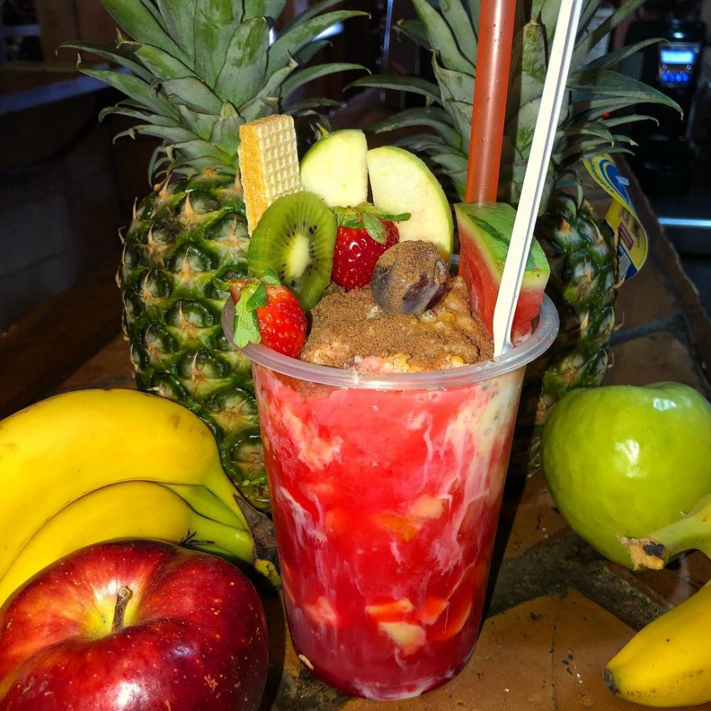

Cholados
Cholados adalah menu penutup tradisional yang berasal dari Kolombia, Cholados adalah kombinasi buah dan susu kental manis, biasanya disajikan dalam cangkir bening. Cholados ini bergizi tinggi karena kandungan buahnya yang tinggi.
Untuk membuat Cholados, anda membutuhkan beberapa bahan-bahan sebagai berikut:
-
SecukupnyaEs yang dihancurkan
-
SecukupnyaStroberi, diiris
-
1 buahMarkisa
-
1 buahPisang, diiris
-
SecukupnyaMangga dan pepaya potong dadu
-
Secukupnya1/2 cangkir
-
SecukupnyaSusu kental manis
Berikut adalah cara membuat Cholados.
Hancurkan es dalam food processor hingga menyerupai serpihan es kerucut salju.
Masukkan es secukupnya ke dalam gelas.
Masukkan sirup ke dalam gelas tersebut menggunakan sirup buah yang cocok digunakan.
Masukkan buah ke dalam gelas sekitar seperempat dari gelas.
Tambahkan susu kental manis. Hiasi dengan buah diatasnya